Chapter 2: Spatial Descriptions and Transformation
PDF p.1Overview
PDF p.2This chapter covers the following topics:
- Descriptions of position vectors and orientations
- Definition of frames and mapping
- Definition of operators for translations, rotations, and transformations
- Summary of interpretations
- Transform equations
2.2 Description of a Position
PDF p.3Position VectorA column matrix of three real numbers $(p_x, p_y, p_z)^T$ giving the directed distance from a frame's origin to a point, measured along each axis of that frame.Craig, Intro to Robotics, §2.2: With respect to a reference frame, any point can be described by a $3 \times 1$ position vector.
$${}^{A}P = \begin{bmatrix} p_x \\ p_y \\ p_z \end{bmatrix}$$The leading superscript indicates the coordinate system to which the vector is referenced to.
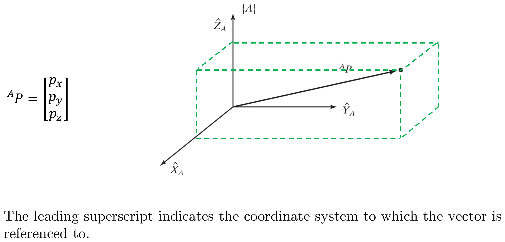
2.2 Description of an Orientation
PDF p.4Rotation MatrixA 3×3 orthogonal matrix with determinant +1, belonging to the Special Orthogonal group $SO(3)$. It has 9 entries but only 3 degrees of freedom (the 6 orthogonality constraints $R^TR=I$ remove 6).Wikipedia: Rotation matrix: Rotation matrices are used to describe the projections of the moving frame onto the axes of the fixed frame.
Consider $\{A\}$ be the fixed reference frame and $\{B\}$ be the moving frame with unit vectors $\hat{X}_B$, $\hat{Y}_B$, and $\hat{Z}_B$. Let the unit vectors of frame $\{B\}$ projected on $\{A\}$ become ${}^{A}\hat{X}_B$, ${}^{A}\hat{Y}_B$, and ${}^{A}\hat{Z}_B$.
The relative orientation of $\{B\}$ with respect to $\{A\}$ is defined by a $3 \times 3$ orthogonal matrix as:
$${}^{A}_{B}R = \begin{bmatrix} {}^{A}\hat{X}_B & {}^{A}\hat{Y}_B & {}^{A}\hat{Z}_B \end{bmatrix} = \begin{bmatrix} r_{11} & r_{12} & r_{13} \\ r_{21} & r_{22} & r_{23} \\ r_{31} & r_{32} & r_{33} \end{bmatrix}$$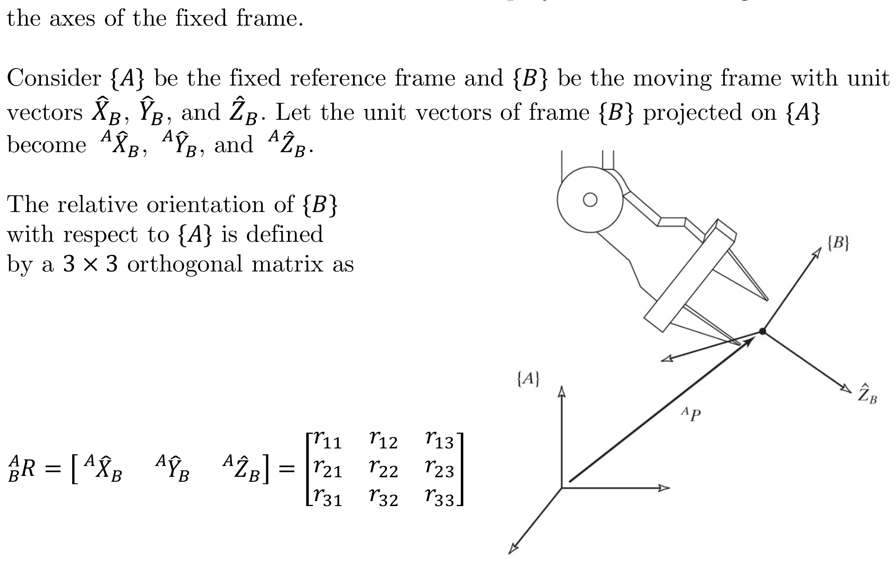
Direction Cosine Representation
PDF p.5The projection of each axis of moving frame $\{B\}$ onto the axes of the fixed frame $\{A\}$ can be represented by direction cosines.
For example, axis $\hat{Y}_B$ projected onto the axes $\hat{X}_A$, $\hat{Y}_A$, and $\hat{Z}_A$ requires knowing the angles $\alpha_y$, $\beta_y$, and $\gamma_y$.
$${}^{A}\hat{Y}_B = \begin{bmatrix} v_x \\ v_y \\ v_z \end{bmatrix} = \begin{bmatrix} \cos(\alpha_y) \\ \cos(\beta_y) \\ \cos(\gamma_y) \end{bmatrix}$$Since all the axes are unit vectors, the dot product definition reduces to:
$$\cos(\alpha_y) = \frac{\hat{X}_A \cdot \hat{Y}_B}{\|\hat{X}_A\| \|\hat{Y}_B\|} = \hat{X}_A \cdot \hat{Y}_B$$where $\|\hat{X}_A\| = \|\hat{Y}_B\| = 1$.
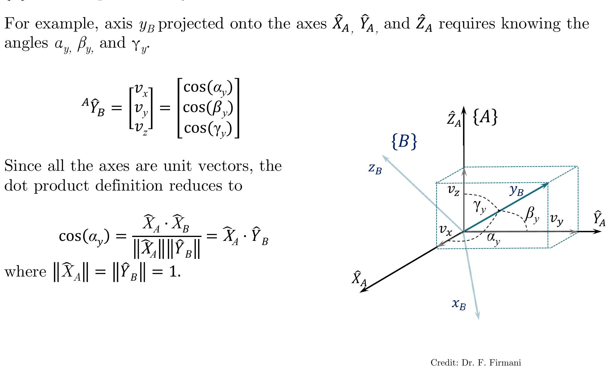
Therefore, the rotation matrix:
$${}^{A}_{B}R = \begin{bmatrix} {}^{A}\hat{X}_B & {}^{A}\hat{Y}_B & {}^{A}\hat{Z}_B \end{bmatrix} = \begin{bmatrix} u_x & v_x & w_x \\ u_y & v_y & w_y \\ u_z & v_z & w_z \end{bmatrix}$$can be defined in terms of direction cosines as:
$${}^{A}_{B}R = \begin{bmatrix} \cos(\alpha_x) & \cos(\alpha_y) & \cos(\alpha_z) \\ \cos(\beta_x) & \cos(\beta_y) & \cos(\beta_z) \\ \cos(\gamma_x) & \cos(\gamma_y) & \cos(\gamma_z) \end{bmatrix}$$or in terms of dot products:
$${}^{A}_{B}R = \begin{bmatrix} \hat{X}_A \cdot \hat{X}_B & \hat{X}_A \cdot \hat{Y}_B & \hat{X}_A \cdot \hat{Z}_B \\ \hat{Y}_A \cdot \hat{X}_B & \hat{Y}_A \cdot \hat{Y}_B & \hat{Y}_A \cdot \hat{Z}_B \\ \hat{Z}_A \cdot \hat{X}_B & \hat{Z}_A \cdot \hat{Y}_B & \hat{Z}_A \cdot \hat{Z}_B \end{bmatrix}$$Properties of Rotation Matrices
PDF p.7Transpose Property: The description of frame $\{A\}$ relative to $\{B\}$ is given by the transpose of ${}^{A}_{B}R$, that is:
$${}^{B}_{A}R = {}^{A}_{B}R^T$$Rotations preserve lengths and angles — they are isometries. Algebraically, this means $\|Rv\| = \|v\|$ for all vectors $v$, which forces $R^TR = I$. So the transpose IS the inverse: $R^T = R^{-1}$.
Geometrically: each entry $r_{ij}$ of $R$ is the dot product $\hat{e}_i \cdot \hat{e}'_j$ (projection of new axis $j$ onto old axis $i$). Transposing swaps the roles of old and new — exactly what "inverting" the rotation means.
This follows because the columns of the rotation matrix are mutually orthogonal unit vectors: $\hat{X}_B \cdot \hat{Y}_B = 0$, $\hat{X}_B \cdot \hat{X}_B = 1$, etc.
Hence:
$${}^{A}_{B}R = {}^{B}_{A}R^{-1} = {}^{B}_{A}R^T$$- ${}^{A}_{B}R^T = {}^{A}_{B}R^{-1}$ (rotation matrices are orthogonal)
- ${}^{B}_{A}R = {}^{A}_{B}R^T$ (inverse relationship between frames)
Drag the slider to rotate the coordinate frame. Watch how the rotation matrix changes and how the sample point P moves.
The slides state the result; here is a self-contained proof from first principles.
Claim. Every rotation matrix $R \in SO(3)$ satisfies $R^T R = I_3$ (and therefore $R^{-1} = R^T$).
Proof.
A rotation matrix is defined by expressing the unit vectors of the moving frame $\{B\}$ in the coordinates of the fixed frame $\{A\}$:
$$R = \begin{bmatrix} \mathbf{r}_1 & \mathbf{r}_2 & \mathbf{r}_3 \end{bmatrix}$$where $\mathbf{r}_1, \mathbf{r}_2, \mathbf{r}_3 \in \mathbb{R}^3$ are the columns.
Because $\{B\}$ is a right-handed orthonormal frame, its unit vectors satisfy:
$$\mathbf{r}_i \cdot \mathbf{r}_j = \delta_{ij} = \begin{cases} 1 & \text{if } i = j \\ 0 & \text{if } i \neq j \end{cases}$$This gives six independent constraints: three unit-magnitude conditions ($\|\mathbf{r}_i\| = 1$) and three mutual-orthogonality conditions ($\mathbf{r}_i \cdot \mathbf{r}_j = 0$ for $i \neq j$).
The $(i,j)$ entry of $R^T R$ is exactly $\mathbf{r}_i^T \mathbf{r}_j = \mathbf{r}_i \cdot \mathbf{r}_j = \delta_{ij}$. Therefore:
$$R^T R = I_3 \quad \blacksquare$$Since $R^T R = I_3$, the matrix $R^T$ is a left inverse of $R$. For square matrices, a left inverse is also a right inverse, so $R R^T = I_3$ as well, giving $R^{-1} = R^T$.
Physical intuition. A rotation preserves lengths and angles. The condition $R^T R = I$ encodes exactly this: it says the dot product of any two vectors is unchanged when both are multiplied by $R$, since $(Ru)^T(Rv) = u^T R^T R v = u^T v$.
Reference: MIT OCW Lecture 12: Orthonormal Matrices | Wikipedia: Orthogonal matrix
Claim. For any rotation matrix $R$, $\det(R) = +1$.
Proof.
Since $R^T R = I$, taking the determinant of both sides:
$$\det(R^T R) = \det(I) = 1$$$\det(R^T R) = \det(R^T) \cdot \det(R) = (\det R)^2 = 1$, so $\det(R) = \pm 1$.
Any rotation can be parametrized as a continuous function of the rotation angle $\theta$, starting from the identity ($\theta = 0$). Since $\det(I) = 1$ and the determinant is a continuous function, $\det(R(\theta))$ cannot jump from $+1$ to $-1$ without passing through zero -- but $(\det R)^2 = 1$ forbids $\det R = 0$. Therefore $\det(R) = +1$ for all rotations.
Remark. Matrices with $\det = -1$ are improper rotations (reflections or rotoreflections). The set of all $3 \times 3$ orthogonal matrices with $\det = +1$ is the special orthogonal group $SO(3)$.
Reference: Physics Forums discussion | Cornell CS 6670 lecture notes
Modern Robotics 3.2.1 -- Rotation Matrices (Part 1 of 2)
Introduces the space of rotation matrices $SO(3)$ and covers properties including orthogonality, the inverse-equals-transpose relationship, and the physical meaning of each column. Directly reinforces the content on pages 4-7.
Modern Robotics 3.2.1 -- Rotation Matrices (Part 2 of 2)
Covers three uses of rotation matrices: representing orientation, changing frame of reference, and rotating vectors. Maps directly to the mapping concepts introduced in Section 2.3.
2.2 Description of a Frame
PDF p.8Frame: A frame is a set of four vectors giving position and orientation information. This description can be thought of as a position vector and a rotation matrix.
For example, frame $\{B\}$ is described by ${}^{A}_{B}R$ and ${}^{A}P_{B_{ORG}}$, where ${}^{A}P_{B_{ORG}}$ is the vector that locates the origin of the frame $\{B\}$.
$$\{B\} = \{{}^{A}_{B}R, \; {}^{A}P_{B_{ORG}}\}$$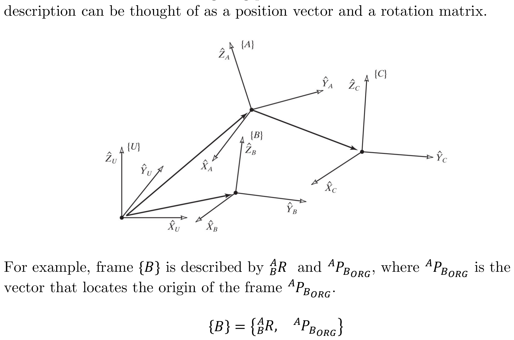
2.3 Mapping
PDF p.9Mapping: Mapping is used in robotics to change the descriptions of quantities in terms of various reference coordinate systems, from frame to frame.
Types of mapping:
- Translational mapping
- Rotational mapping
- General mapping
Translational Mapping
PDF p.10Consider the position defined by the vector ${}^{B}P$ as shown. Let us express it in space in terms of frame $\{A\}$, that is ${}^{A}P$. Note that $\{A\}$ and $\{B\}$ have the same orientation. Given that vector ${}^{A}P_{B_{ORG}}$ locates the origin of $\{B\}$ with respect to $\{A\}$, we have:
$${}^{A}P = {}^{B}P + {}^{A}P_{B_{ORG}}$$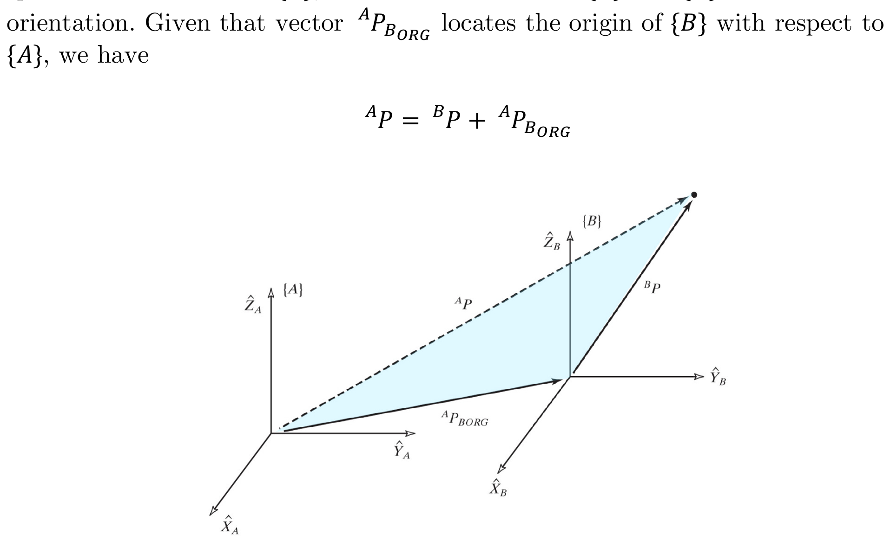
Rotational Mapping
PDF p.11Let the two frames $\{A\}$ and $\{B\}$ share the same origin, but with different orientation. Rotation matrix ${}^{A}_{B}R$ describes $\{B\}$ relative to $\{A\}$.
It can be shown that any point expressed in $\{B\}$ can be expressed in $\{A\}$ using the rotational mapping:
$${}^{A}P = {}^{A}_{B}R \; {}^{B}P$$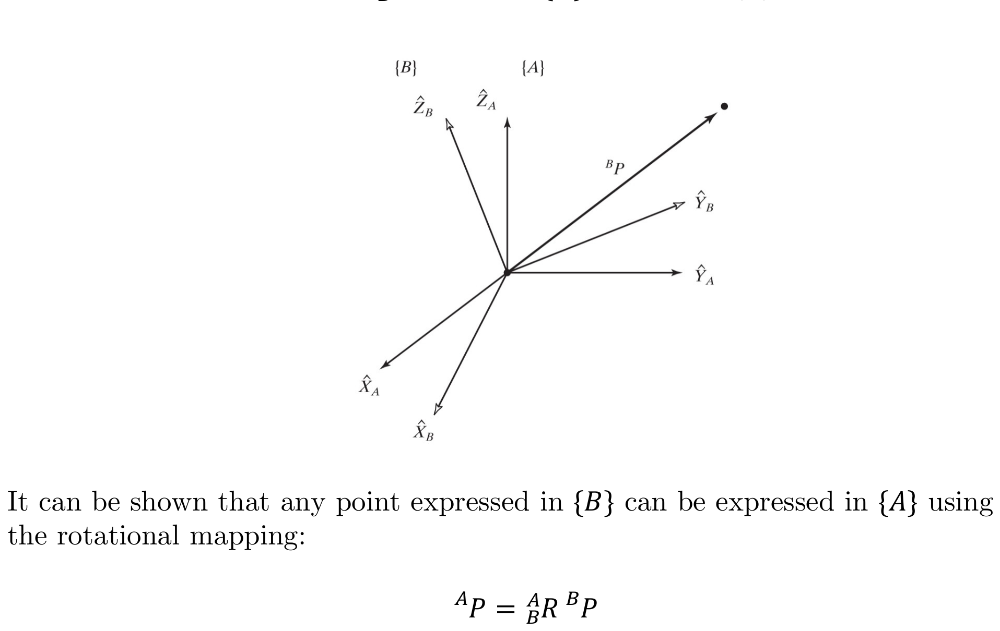
Students often memorize this formula without understanding why multiplying by the rotation matrix changes coordinates. Here is a column-by-column explanation:
The key insight: The columns of ${}^{A}_{B}R$ are the unit vectors of frame $\{B\}$ written in frame $\{A\}$'s coordinates.
$${}^{A}_{B}R = \begin{bmatrix} {}^{A}\hat{X}_B & {}^{A}\hat{Y}_B & {}^{A}\hat{Z}_B \end{bmatrix}$$Now, the point $P$ expressed in $\{B\}$ is:
$${}^{B}P = \begin{bmatrix} p_1 \\ p_2 \\ p_3 \end{bmatrix}$$This means: "go $p_1$ along $\hat{X}_B$, then $p_2$ along $\hat{Y}_B$, then $p_3$ along $\hat{Z}_B$."
When we compute the matrix-vector product, we get:
$${}^{A}_{B}R \; {}^{B}P = p_1 \cdot {}^{A}\hat{X}_B + p_2 \cdot {}^{A}\hat{Y}_B + p_3 \cdot {}^{A}\hat{Z}_B$$This is exactly the same physical displacement, but now each basis direction $\hat{X}_B, \hat{Y}_B, \hat{Z}_B$ is expressed in $\{A\}$'s coordinates. The result is $P$'s location described in frame $\{A\}$.
Mnemonic for the subscript/superscript notation: In the expression ${}^{A}_{B}R \; {}^{B}P$, the "inner" subscript $B$ of $R$ matches the superscript $B$ of $P$ -- they "cancel," leaving the result referenced to frame $\{A\}$ (the "outer" superscript of $R$). This subscript-cancellation rule extends to chains: ${}^{A}_{B}R \; {}^{B}_{C}R = {}^{A}_{C}R$.
General Mapping
PDF p.12General mapping involves both rotation and translation. Let the two frames $\{A\}$ and $\{B\}$ have different origins and different orientation.
The general transformation mapping of a vector from its description in one frame to a description in a second frame is:
$${}^{A}P = {}^{A}_{B}R \; {}^{B}P + {}^{A}P_{B_{ORG}}$$The vector ${}^{B}P$ is expressed in frame $\{B\}$'s axes. Before we can add it to ${}^{A}P_{B_{ORG}}$ (which lives in $\{A\}$'s axes), we must first express it in frame $\{A\}$ — that's what the rotation ${}^{A}_{B}R \; {}^{B}P$ does. Only after both vectors are in the same coordinate system can we add them.
If you translated first and rotated second, you'd be rotating the translation vector too — giving the wrong answer. The order matters because rotation is a linear operation (it acts on vectors) while translation is affine (it shifts the origin).
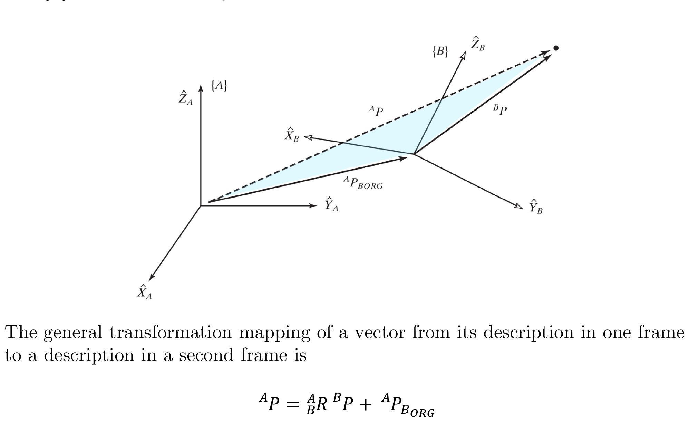
Homogeneous Transform
PDF p.13Homogeneous Transform: It is desirable to express the general mapping as an operator in matrix form via transformation matrix ${}^{A}_{B}T$.
$${}^{A}P = {}^{A}_{B}T \; {}^{B}P$$Combining both position vector and rotation matrices into one operator:
$$\begin{bmatrix} {}^{A}P \\ 1 \end{bmatrix} = \begin{bmatrix} {}^{A}_{B}R & {}^{A}P_{B_{ORG}} \\ 0 \;\; 0 \;\; 0 & 1 \end{bmatrix} \begin{bmatrix} {}^{B}P \\ 1 \end{bmatrix}$$In which:
- A "1" is added as the last element of the $4 \times 1$ vector
- A row $\begin{bmatrix} 0 & 0 & 0 & 1 \end{bmatrix}$ is added as the last row of the $4 \times 4$ matrix
The general mapping ${}^{A}P = R \cdot {}^{B}P + d$ is an affine transformation -- it combines a linear operation (rotation) with a non-linear one (translation). Affine transforms cannot be represented by a single matrix multiplication in 3D.
The trick of homogeneous coordinates lifts the problem into 4D, where the affine transform becomes a linear transform:
$$\begin{bmatrix} R & d \\ 0 & 1 \end{bmatrix} \begin{bmatrix} P \\ 1 \end{bmatrix} = \begin{bmatrix} RP + d \\ 1 \end{bmatrix}$$Why this matters:
- Composition becomes multiplication. Two successive transforms $T_1$ followed by $T_2$ are simply $T_2 \cdot T_1$. Without homogeneous coordinates, you would need separate rotation and translation bookkeeping.
- Inversion has a clean formula. As shown in Section 2.6.
- Uniform representation. Translations, rotations, and general rigid-body motions all live in the same $4 \times 4$ matrix space, called $SE(3)$ (the Special Euclidean group).
The bottom row $[0 \; 0 \; 0 \; 1]$ enforces that the "1" in the augmented vector is preserved through multiplication, keeping us in the space of rigid-body motions. If you allowed arbitrary values in the bottom row, you would get projective transformations (used in computer graphics for perspective projection).
Modern Robotics 3.3.1 -- Homogeneous Transformation Matrices
Introduces the 4x4 homogeneous transformation matrix and the Special Euclidean group $SE(3)$. Covers all three uses: representing a configuration, changing frame of reference, and displacing a frame. Directly supplements Sections 2.3-2.4.
The 4th row of a homogeneous transformation matrix $T \in SE(3)$ always contains:
2.4 Mapping with Homogeneous Transforms
PDF p.14Homogeneous transforms can be used for mapping:
i. Translation mapping (${}^{A}_{B}R = I_3$):
$$\begin{bmatrix} {}^{A}P \\ 1 \end{bmatrix} = \begin{bmatrix} I_3 & {}^{A}P_{B_{ORG}} \\ 0 \;\; 0 \;\; 0 & 1 \end{bmatrix} \begin{bmatrix} {}^{B}P \\ 1 \end{bmatrix}$$ii. Rotational mapping (${}^{A}P_{B_{ORG}} = \begin{bmatrix} 0 & 0 & 0 \end{bmatrix}^T$):
$$\begin{bmatrix} {}^{A}P \\ 1 \end{bmatrix} = \begin{bmatrix} {}^{A}_{B}R & \begin{matrix} 0 \\ 0 \\ 0 \end{matrix} \\ 0 \;\; 0 \;\; 0 & 1 \end{bmatrix} \begin{bmatrix} {}^{B}P \\ 1 \end{bmatrix}$$iii. General mapping:
$$\begin{bmatrix} {}^{A}P \\ 1 \end{bmatrix} = \begin{bmatrix} {}^{A}_{B}R & {}^{A}P_{B_{ORG}} \\ 0 \;\; 0 \;\; 0 & 1 \end{bmatrix} \begin{bmatrix} {}^{B}P \\ 1 \end{bmatrix}$$2.6 Transformation Arithmetic
PDF p.15Homogeneous transforms have the following properties:
where ${}^{0}_{n}R = {}^{0}_{1}R \; {}^{1}_{2}R \cdots {}^{n-1}_{n}R$
The translation $d = {}^{A}P_{B_{ORG}}$ is expressed in frame $\{A\}$. But the inverse transform needs the translation from $\{B\}$'s perspective — in $\{B\}$'s coordinates. Converting $d$ into $\{B\}$'s coordinates requires multiplying by $R^T$ (the inverse rotation). Then we negate it because we're going backward: ${}^{B}P_{A_{ORG}} = -R^T d$.
You can verify: multiply $T \cdot T^{-1}$ and confirm you get $I_4$. The rotation part gives $R R^T = I_3$. The translation part gives $R(-R^T d) + d = -d + d = 0$.
- Compound: ${}^{0}_{n}T = {}^{0}_{1}T \; {}^{1}_{2}T \; {}^{2}_{3}T \cdots {}^{n-1}_{n}T$
- Inverse: ${}^{A}_{B}T^{-1} = {}^{B}_{A}T$
- The inverse uses the transpose of the rotation part and negates the translated position: $-{}^{A}_{B}R^T \; {}^{A}P_{B_{ORG}}$
The slides give the formula for $T^{-1}$ but do not prove it. Here is a direct verification.
Claim.
$$T = \begin{bmatrix} R & d \\ 0 & 1 \end{bmatrix} \implies T^{-1} = \begin{bmatrix} R^T & -R^T d \\ 0 & 1 \end{bmatrix}$$Proof. Multiply $T^{-1} \cdot T$ and verify we get the identity:
- Upper-left block: $R^T R = I_3$ (because $R$ is orthogonal).
- Upper-right block: $R^T d + (-R^T d) \cdot 1 = R^T d - R^T d = 0$.
- Lower-left: $0 \cdot R + 0 = 0$.
- Lower-right: $0 \cdot d + 1 \cdot 1 = 1$.
Similarly, $T \cdot T^{-1} = I_4$, confirming that the given formula is indeed the inverse.
Physical interpretation: $-R^T d$ is the origin of $\{A\}$ expressed in $\{B\}$'s coordinates. Since $d = {}^{A}P_{B_{ORG}}$ is the position of $\{B\}$'s origin in $\{A\}$, we need to rotate it into $\{B\}$'s frame ($R^T d$) and negate it to get $\{A\}$'s origin in $\{B\}$.
Why not use standard matrix inversion? For a general $4 \times 4$ matrix, computing the inverse requires $O(n^3)$ operations with Gauss-Jordan elimination. The formula above exploits the special structure of $SE(3)$ -- it only needs a transpose (free in practice) and one matrix-vector multiply ($R^T d$). This is computationally important in real-time robotics.
Reference: Modern Robotics resource | Uni-Paderborn Inverse Transformation
A common source of confusion is the order of multiplication in compound transforms. Here is a practical way to think about it.
Rule: Read the subscripts like a chain, right to left.
To go from frame $\{0\}$ to frame $\{n\}$, the chain is:
$${}^{0}_{n}T = {}^{0}_{1}T \cdot {}^{1}_{2}T \cdot {}^{2}_{3}T \cdots {}^{n-1}_{n}T$$The rightmost matrix acts first on a vector in frame $\{n\}$, transforming it to frame $\{n-1\}$, then the next matrix transforms from $\{n-1\}$ to $\{n-2\}$, and so on until the leftmost matrix brings the vector into frame $\{0\}$.
The subscript cancellation mnemonic:
$${}^{0}_{\cancel{1}}T \; {}^{\cancel{1}}_{\cancel{2}}T \; {}^{\cancel{2}}_{3}T = {}^{0}_{3}T$$Adjacent inner subscript/superscript pairs "cancel." If they do not match, the chain is incorrect.
Common mistake: Writing ${}^{A}_{B}T \cdot {}^{C}_{D}T$ when $B \neq C$. The "inner" subscript of the left matrix must equal the "inner" superscript of the right matrix.
Pre-multiplication vs. post-multiplication:
- When you add a new transform on the left, you are describing the existing pose in a new outer frame.
- When you add a new transform on the right, you are appending a motion relative to the current body frame.
This distinction becomes critical in Chapter 3 (DH parameters) and when dealing with fixed-angle vs. Euler-angle conventions.
2.7 Transform Equations
PDF p.16Frame $\{D\}$ can be expressed as products of transformations in two different ways.
$${}^{U}_{D}T = {}^{U}_{A}T \; {}^{A}_{D}T = {}^{U}_{B}T \; {}^{B}_{C}T \; {}^{C}_{D}T$$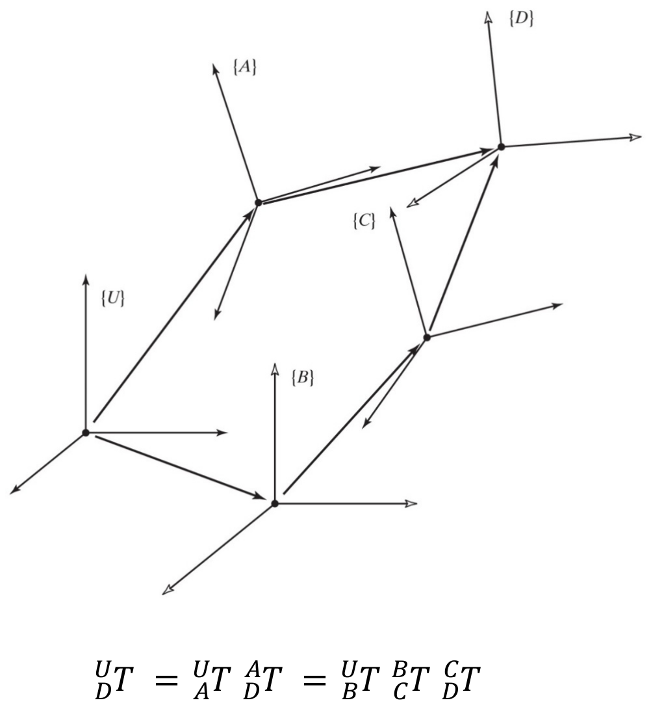
2.8 More on Representation of Orientation
2.8.1 Cayley's Formula
PDF p.17Although a rotation matrix is composed of 9 elements, there are some properties that have to be satisfied, namely orthogonality and unit magnitude, that yield 6 independent constraints:
Unit magnitude (3 constraints):
$$\|{}^{A}\hat{X}_B\| = 1, \quad \|{}^{A}\hat{Y}_B\| = 1, \quad \|{}^{A}\hat{Z}_B\| = 1$$Orthogonality (3 constraints):
$${}^{A}\hat{X}_B \cdot {}^{A}\hat{Y}_B = 0, \quad {}^{A}\hat{Y}_B \cdot {}^{A}\hat{Z}_B = 0, \quad {}^{A}\hat{Z}_B \cdot {}^{A}\hat{X}_B = 0$$Cross-product relationships:
$${}^{A}\hat{X}_B \times {}^{A}\hat{Y}_B = {}^{A}\hat{Z}_B, \quad {}^{A}\hat{Y}_B \times {}^{A}\hat{Z}_B = {}^{A}\hat{X}_B, \quad {}^{A}\hat{Z}_B \times {}^{A}\hat{X}_B = {}^{A}\hat{Y}_B$$Thus, a rotation matrix can be represented by only three parameters.
Cayley showed that any rotation matrix can be represented with a skew-symmetric matrix $S$ (where $S = -S^T$):
$$R = (I_3 - S)^{-1}(I_3 + S)$$where
$$S = \begin{bmatrix} 0 & -s_z & s_y \\ s_z & 0 & -s_x \\ -s_y & s_x & 0 \end{bmatrix}$$A $3 \times 3$ matrix has 9 entries. The 6 constraints (3 unit-length + 3 orthogonality) reduce the degrees of freedom to $9 - 6 = 3$. This is why every orientation representation -- Euler angles ($\alpha, \beta, \gamma$), angle-axis ($\hat{K}, \theta$), and quaternions ($\epsilon_1, \epsilon_2, \epsilon_3, \epsilon_4$ with the constraint $\|\epsilon\| = 1$, giving $4 - 1 = 3$ free parameters) -- uses exactly three independent numbers.
Cayley's formula in context: The skew-symmetric matrix $S$ has exactly 3 independent entries ($s_x, s_y, s_z$), so Cayley's formula provides a concrete way to parametrize all rotations with 3 numbers. However, it cannot represent rotations of exactly $180°$ (where $I - S$ becomes singular). This is a limitation analogous to gimbal lock in Euler angles -- every 3-parameter representation of $SO(3)$ must have at least one singularity (a topological fact).
2.8.2 Fixed Angles $X$-$Y$-$Z$ (Roll-Pitch-Yaw)
PDF p.18Fixed Angles (X-Y-Z): Let $\{A\}$ be the fixed frame and $\{B\}$ the moving frame. Let them be coincident as well.
"First rotate $\{B\}$ about $\hat{X}_A$ by an angle $\gamma$, then rotate $\{B\}$ about $\hat{Y}_A$ by an angle $\beta$, and then rotate $\{B\}$ about $\hat{Z}_A$ by an angle $\alpha$."
Fixed angles are also referred to as rollRotation about the forward/longitudinal axis (X). Think of an airplane banking its wings left or right.Common in aerospace: roll = X, pitch = Y, yaw = Z, pitchRotation about the lateral axis (Y). Think of an airplane nose tilting up or down.Standard aerospace convention, and yawRotation about the vertical axis (Z). Think of an airplane turning left or right while level.Standard aerospace convention angles.
Rotations are performed in the order $R_X(\gamma)$, $R_Y(\beta)$, $R_Z(\alpha)$.
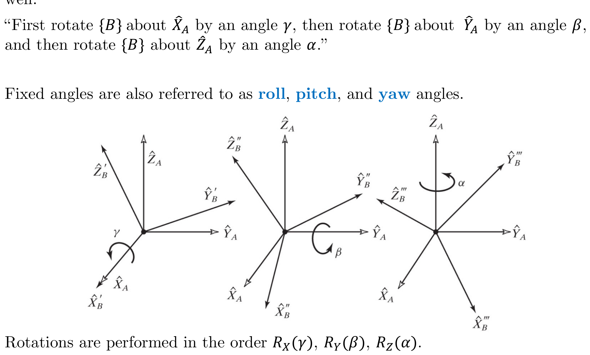
Forward Problem
PDF p.19With the fixed angle representation, the rotation matrices are pre-multiplied:
$${}^{A}_{B}R_{XYZ}(\gamma, \beta, \alpha) = R_Z(\alpha) \; R_Y(\beta) \; R_X(\gamma)$$ $$= \begin{bmatrix} c\alpha & -s\alpha & 0 \\ s\alpha & c\alpha & 0 \\ 0 & 0 & 1 \end{bmatrix} \begin{bmatrix} c\beta & 0 & s\beta \\ 0 & 1 & 0 \\ -s\beta & 0 & c\beta \end{bmatrix} \begin{bmatrix} 1 & 0 & 0 \\ 0 & c\gamma & -s\gamma \\ 0 & s\gamma & c\gamma \end{bmatrix}$$ $${}^{A}_{B}R_{XYZ}(\gamma, \beta, \alpha) = \begin{bmatrix} c\alpha c\beta & c\alpha s\beta s\gamma - s\alpha c\gamma & c\alpha s\beta c\gamma + s\alpha s\gamma \\ s\alpha c\beta & s\alpha s\beta s\gamma + c\alpha c\gamma & s\alpha s\beta c\gamma - c\alpha s\gamma \\ -s\beta & c\beta s\gamma & c\beta c\gamma \end{bmatrix} = \begin{bmatrix} r_{11} & r_{12} & r_{13} \\ r_{21} & r_{22} & r_{23} \\ r_{31} & r_{32} & r_{33} \end{bmatrix}$$where $c\alpha = \cos\alpha$, $s\alpha = \sin\alpha$, etc.
Inverse Problem
Extracting $X$-$Y$-$Z$ angles from the rotation matrix. Let the rotation matrix be known:
$$\beta = \text{Atan2}\!\left(-r_{31},\; \sqrt{r_{11}^2 + r_{21}^2}\right)$$ $$\alpha = \text{Atan2}\!\left(r_{21}/c\beta,\; r_{11}/c\beta\right)$$ $$\gamma = \text{Atan2}\!\left(r_{32}/c\beta,\; r_{33}/c\beta\right)$$Singularity / Degenerate Case (Gimbal LockA loss of one degree of freedom in a 3-axis system when two axes become aligned. Named after the physical phenomenon in mechanical gyroscopes where a gimbal ring aligns with another, making one rotation axis redundant.Wikipedia: Gimbal lock)
PDF p.20Note: If $\beta = \pm 90°$ (so that $c\beta = 0$), the solution of $\alpha$ and $\gamma$ degenerates. In this case, only the sum or the difference of $\alpha$ and $\gamma$ can be computed.
When $\beta = 90°$, the X and Z rotation axes become parallel. Mathematically, the matrix simplifies so that $\alpha$ and $\gamma$ only appear as $(\alpha - \gamma)$ — you can change both by the same amount and get the same rotation matrix. This means infinitely many $(\alpha, \gamma)$ pairs give the same result.
This is NOT a problem with the rotation itself (which is perfectly well-defined). It's a problem with the parameterization — trying to describe a 3-DOF thing ($SO(3)$) with 3 numbers always creates at least one configuration where the mapping isn't one-to-one. This is a topological necessity: $SO(3)$ is not homeomorphic to $\mathbb{R}^3$.
Practical fix: Use quaternions (4 parameters, 1 constraint, no singularity) or detect when $\beta$ approaches $\pm 90°$ and switch representations.
Convention:
- If $\beta = 90°$, then a solution can be calculated to be: $$\beta = 90°$$ $$\alpha = 0°$$ $$\gamma = \text{Atan2}(r_{12},\; r_{22})$$
- If $\beta = -90°$, then a solution can be calculated to be: $$\beta = -90°$$ $$\alpha = 0°$$ $$\gamma = -\text{Atan2}(r_{12},\; r_{22})$$
A frequent point of confusion: for fixed angles (X-Y-Z), the physical rotations happen in the order $X$ first, then $Y$, then $Z$, but the matrices are written as $R_Z \cdot R_Y \cdot R_X$ (the last rotation performed appears leftmost). Why?
Think of it operationally. Suppose a vector $\mathbf{v}$ is in the original frame. The first rotation $R_X$ acts on $\mathbf{v}$ directly:
$$\mathbf{v}' = R_X \mathbf{v}$$Then $R_Y$ acts on the result:
$$\mathbf{v}'' = R_Y \mathbf{v}' = R_Y R_X \mathbf{v}$$Then $R_Z$:
$$\mathbf{v}''' = R_Z \mathbf{v}'' = R_Z R_Y R_X \mathbf{v}$$So the composite rotation is $R_Z R_Y R_X$ -- each successive rotation about a fixed axis gets pre-multiplied (added on the left).
Contrast with Euler angles (body axes): When each rotation is about the current body axis, the new rotation goes on the right (post-multiplication). This is proven in Section 2.8.3, where the identical matrix arises from the reversed order of body-axis rotations.
| Convention | Rotation axes | Matrix order | Multiplication rule |
|---|---|---|---|
| Fixed angles (X-Y-Z) | Fixed frame axes | $R_Z R_Y R_X$ | Pre-multiply (left) |
| Euler angles (Z-Y'-X'') | Body-attached axes | $R_Z R_Y R_X$ | Post-multiply (right) |
The matrices are identical because the sequence is reversed: X-Y-Z fixed = Z'-Y'-X'' Euler.
2.8.3 Euler Angles $Z'$-$Y'$-$X'$ ($Z$-$Y$-$X$)
PDF p.21Euler Angles (Z-Y-X): Let $\{A\}$ be the fixed frame and $\{B\}$ the moving frame. Let them be coincident.
"First rotate $\{B\}$ about $\hat{Z}_B$ by an angle $\alpha$, then rotate $\{B\}$ about the rotated $\hat{Y}'_B$ by an angle $\beta$, and then rotate $\{B\}$ about the twice-rotated $\hat{X}''_B$ by an angle $\gamma$."
A rotation matrix parametrized by Euler angles is indicated by: ${}^{A}_{B}R_{Z'Y'X''}(\alpha, \beta, \gamma)$.
Alternative notation: ${}^{A}_{B}R_{Z'Y'X''}(\alpha, \beta, \gamma) = {}^{A}_{B}R_{ZY'X''}(\alpha, \beta, \gamma)$
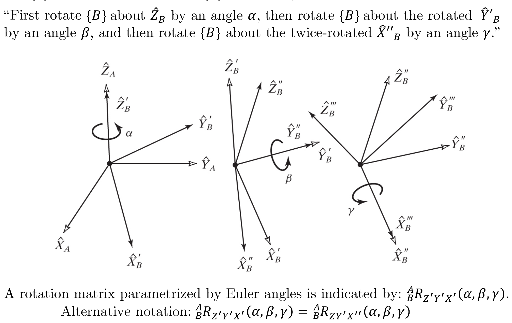
Forward Problem
PDF p.22With the Euler angle representation, the rotation matrices are post-multiplied:
$${}^{A}_{B}R_{Z'Y'X''}(\alpha, \beta, \gamma) = R_Z(\alpha) \; R_{Y'}(\beta) \; R_{X''}(\gamma)$$ $$= \begin{bmatrix} c\alpha & -s\alpha & 0 \\ s\alpha & c\alpha & 0 \\ 0 & 0 & 1 \end{bmatrix} \begin{bmatrix} c\beta & 0 & s\beta \\ 0 & 1 & 0 \\ -s\beta & 0 & c\beta \end{bmatrix} \begin{bmatrix} 1 & 0 & 0 \\ 0 & c\gamma & -s\gamma \\ 0 & s\gamma & c\gamma \end{bmatrix}$$ $${}^{A}_{B}R_{Z'Y'X''}(\alpha, \beta, \gamma) = \begin{bmatrix} c\alpha c\beta & c\alpha s\beta s\gamma - s\alpha c\gamma & c\alpha s\beta c\gamma + s\alpha s\gamma \\ s\alpha c\beta & s\alpha s\beta s\gamma + c\alpha c\gamma & s\alpha s\beta c\gamma - c\alpha s\gamma \\ -s\beta & c\beta s\gamma & c\beta c\gamma \end{bmatrix} = \begin{bmatrix} r_{11} & r_{12} & r_{13} \\ r_{21} & r_{22} & r_{23} \\ r_{31} & r_{32} & r_{33} \end{bmatrix}$$Inverse Problem
Note that the matrix is exactly the same one as the one obtained for the $X$-$Y$-$Z$ fixed angles, but the rotations were taken in opposite order. The equations that solve $\alpha$, $\beta$, and $\gamma$ are therefore the same:
$$\beta = \text{Atan2}\!\left(-r_{31},\; \sqrt{r_{11}^2 + r_{21}^2}\right)$$ $$\alpha = \text{Atan2}\!\left(r_{21}/c\beta,\; r_{11}/c\beta\right)$$ $$\gamma = \text{Atan2}\!\left(r_{32}/c\beta,\; r_{33}/c\beta\right)$$The $X$-$Y$-$Z$ fixed angle representation and the $Z'$-$Y'$-$X''$ Euler angle representation produce identical rotation matrices. The difference is only in interpretation: fixed angles rotate about the stationary axes (pre-multiply), while Euler angles rotate about the body-attached axes (post-multiply), but the order is reversed.
2.8.4 Euler Angles $Z'$-$Y'$-$Z''$ ($Z$-$Y$-$Z$)
PDF p.23"First rotate $\{B\}$ about $\hat{Z}_B$ by an angle $\alpha$, then rotate $\{B\}$ about the rotated $\hat{Y}'_B$ by an angle $\beta$, and then rotate $\{B\}$ about the twice-rotated $\hat{Z}''_B$ by an angle $\gamma$."
Forward Problem
With the Euler angle representation, the rotation matrices are post-multiplied:
$${}^{A}_{B}R_{Z'Y'Z''}(\alpha, \beta, \gamma) = R_Z(\alpha) \; R_{Y'}(\beta) \; R_{Z''}(\gamma)$$ $$= \begin{bmatrix} c\alpha & -s\alpha & 0 \\ s\alpha & c\alpha & 0 \\ 0 & 0 & 1 \end{bmatrix} \begin{bmatrix} c\beta & 0 & s\beta \\ 0 & 1 & 0 \\ -s\beta & 0 & c\beta \end{bmatrix} \begin{bmatrix} c\gamma & -s\gamma & 0 \\ s\gamma & c\gamma & 0 \\ 0 & 0 & 1 \end{bmatrix}$$ $${}^{A}_{B}R_{Z'Y'Z''}(\alpha, \beta, \gamma) = \begin{bmatrix} c\alpha c\beta c\gamma - s\alpha s\gamma & -c\alpha c\beta s\gamma - s\alpha c\gamma & c\alpha s\beta \\ s\alpha c\beta c\gamma + c\alpha s\gamma & -s\alpha c\beta s\gamma + c\alpha c\gamma & s\alpha s\beta \\ -s\beta c\gamma & s\beta s\gamma & c\beta \end{bmatrix} = \begin{bmatrix} r_{11} & r_{12} & r_{13} \\ r_{21} & r_{22} & r_{23} \\ r_{31} & r_{32} & r_{33} \end{bmatrix}$$Inverse Problem
$$\beta = \text{Atan2}\!\left(\sqrt{r_{13}^2 + r_{23}^2},\; r_{33}\right)$$ $$\alpha = \text{Atan2}\!\left(r_{23}/s\beta,\; r_{13}/s\beta\right)$$ $$\gamma = \text{Atan2}\!\left(r_{32}/s\beta,\; -r_{31}/s\beta\right)$$Singularity / Degenerate Case
PDF p.24Note: If $\beta = 0°$ or $180°$ (so that $c\beta = \pm 1$), the solution of $\alpha$ and $\gamma$ degenerates. In this case, only the sum or the difference of $\alpha$ and $\gamma$ can be computed.
Convention:
- If $\beta = 0°$, then a solution can be calculated to be: $$\beta = 0°$$ $$\alpha = 0°$$ $$\gamma = \text{Atan2}(-r_{12},\; r_{11})$$
- If $\beta = 180°$, then a solution can be calculated to be: $$\beta = 180°$$ $$\alpha = 0°$$ $$\gamma = \text{Atan2}(r_{12},\; -r_{11})$$
The "singularity" or "degenerate case" in Euler angles and fixed angles is commonly called gimbal lock. It is one of the most confusing concepts for students, so here is an extended explanation.
What happens physically:
Imagine three nested gimbals (rings), each free to rotate about one axis. For the X-Y-Z fixed angle convention:
- The outer gimbal rotates about $X$
- The middle gimbal rotates about $Y$
- The inner gimbal rotates about $Z$
When the middle gimbal ($Y$ rotation, i.e., pitch $\beta$) reaches $\pm 90°$, the outer and inner gimbal axes become parallel. Rotating the outer gimbal then produces the same physical motion as rotating the inner gimbal. Two of the three gimbals now control rotation about the same axis, and one degree of freedom is lost.
What happens mathematically:
For X-Y-Z fixed angles, the rotation matrix when $\beta = 90°$ becomes:
$$R = \begin{bmatrix} 0 & c\alpha s\gamma - s\alpha c\gamma & c\alpha c\gamma + s\alpha s\gamma \\ 0 & s\alpha s\gamma + c\alpha c\gamma & s\alpha c\gamma - c\alpha s\gamma \\ -1 & 0 & 0 \end{bmatrix} = \begin{bmatrix} 0 & -\sin(\alpha - \gamma) & \cos(\alpha - \gamma) \\ 0 & \cos(\alpha - \gamma) & \sin(\alpha - \gamma) \\ -1 & 0 & 0 \end{bmatrix}$$Notice that $\alpha$ and $\gamma$ only appear as the combination $(\alpha - \gamma)$. Given any solution $(\alpha_0, \gamma_0)$, the pair $(\alpha_0 + \delta, \gamma_0 + \delta)$ gives the same matrix for any $\delta$. This means infinitely many Euler angle triples map to the same orientation -- the representation is not unique, and the inverse problem is ill-defined.
Which Euler angle conventions have gimbal lock?
- All of them. Every 3-parameter representation of $SO(3)$ must have at least one singularity. This is a topological necessity: the rotation group $SO(3)$ is not topologically equivalent to $\mathbb{R}^3$, so no smooth 3-parameter map can cover all of $SO(3)$ without a singularity.
- For X-Y-Z: singularity at $\beta = \pm 90°$
- For Z-Y-Z: singularity at $\beta = 0°$ or $180°$
- For Z-Y-X Euler: singularity at $\beta = \pm 90°$
How to avoid gimbal lock:
- Use quaternions (unit quaternions / Euler parameters), which represent rotations without singularities (at the cost of using 4 parameters with one constraint).
- Use the rotation matrix directly (9 parameters, 6 constraints), which also has no singularities.
- If you must use Euler angles, check whether you are near the singular configuration and switch to an alternative convention or representation.
Gimbal Lock Explained (GuerrillaCG)
Classic visual explanation using 3D animation to show how gimbal rings align and a degree of freedom is lost. Directly illustrates the degenerate case discussed on pages 20 and 24.
Euler (Gimbal Lock) Explained
Short, clear demonstration of gimbal lock using 3D models that shows step-by-step how two rotation axes align.
The content of this chapter corresponds to Chapter 2 ("Spatial Descriptions and Transformations") of John J. Craig, Introduction to Robotics: Mechanics and Control, 3rd Edition (Pearson, 2005).
Key correspondences:
- Craig's Section 2.2: Descriptions of position, orientation, and frames (pages 19-27 in Craig)
- Craig's Section 2.3: Mappings (translational, rotational, general) (pages 27-36 in Craig)
- Craig's Section 2.4: Operators (pages 36-40 in Craig)
- Craig's Section 2.6: Transformation arithmetic (pages 41-44 in Craig)
- Craig's Section 2.8: More on representation of orientation (pages 45-54 in Craig)
Textbook PDF: Craig's Introduction to Robotics (Mars University mirror)
Gimbal lock occurs in Euler angle representations because:
2.8.5 Equivalent Angle-Axis Representation
PDF p.25Equivalent Angle-Axis: Let $\{A\}$ be the fixed frame and $\{B\}$ the moving frame. Let them be coincident. If the axis of rotation is a general direction (rather than one of the unit directions that we have seen in previous cases), any orientation may be obtained.
"First rotate $\{B\}$ about vector ${}^{A}\hat{K}$ by an angle $\theta$ according to the right-hand rule."
A general orientation of $\{B\}$ relative to $\{A\}$ can be written as ${}^{A}_{B}R(\hat{K}, \theta)$ or $R_K(\theta)$.
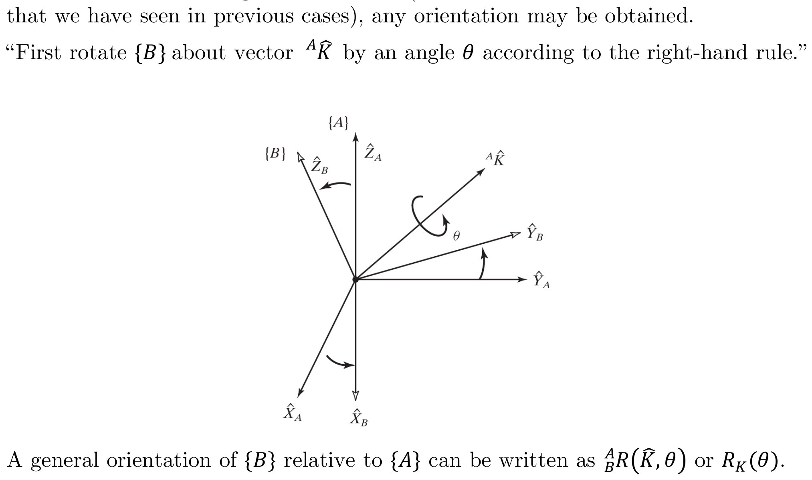
Forward Problem
PDF p.26For a general rotation, the equivalent rotation matrix is:
$$R_K(\theta) = \begin{bmatrix} k_x k_x v\theta + c\theta & k_x k_y v\theta - k_z s\theta & k_x k_z v\theta + k_y s\theta \\ k_x k_y v\theta + k_z s\theta & k_y k_y v\theta + c\theta & k_y k_z v\theta - k_x s\theta \\ k_x k_z v\theta - k_y s\theta & k_y k_z v\theta + k_x s\theta & k_z k_z v\theta + c\theta \end{bmatrix} = \begin{bmatrix} r_{11} & r_{12} & r_{13} \\ r_{21} & r_{22} & r_{23} \\ r_{31} & r_{32} & r_{33} \end{bmatrix}$$where:
$$v\theta = 1 - \cos(\theta) \quad \text{and} \quad {}^{A}\hat{K} = \begin{bmatrix} k_x, & k_y, & k_z \end{bmatrix}^T$$and $c\theta = \cos\theta$, $s\theta = \sin\theta$.
Note: The sign of $\theta$ is determined by the right-hand rule, with the thumb pointing along the positive sense of $\hat{K}$.
Inverse Problem
For a known rotation matrix, the values of the angle and axis are:
$$\theta = \text{acos}\!\left(\frac{r_{11} + r_{22} + r_{33} - 1}{2}\right)$$and
$$\hat{K} = \frac{1}{2\sin\theta} \begin{bmatrix} r_{32} - r_{23} \\ r_{13} - r_{31} \\ r_{21} - r_{12} \end{bmatrix}$$The Rodrigues rotation formula (which is what the angle-axis rotation matrix encodes) can be understood geometrically. Given a unit vector $\hat{K}$ and angle $\theta$, any vector $\mathbf{v}$ is decomposed into:
- Component parallel to $\hat{K}$: $\mathbf{v}_\parallel = (\hat{K} \cdot \mathbf{v})\hat{K}$ -- this is unchanged by rotation about $\hat{K}$.
- Component perpendicular to $\hat{K}$: $\mathbf{v}_\perp = \mathbf{v} - \mathbf{v}_\parallel$ -- this rotates in the plane perpendicular to $\hat{K}$.
The rotated vector is:
$$R_K(\theta)\mathbf{v} = \mathbf{v}_\parallel + \cos\theta \; \mathbf{v}_\perp + \sin\theta \; (\hat{K} \times \mathbf{v})$$Or equivalently (Rodrigues' formula):
$$R_K(\theta)\mathbf{v} = \cos\theta \; \mathbf{v} + (1-\cos\theta)(\hat{K} \cdot \mathbf{v})\hat{K} + \sin\theta \; (\hat{K} \times \mathbf{v})$$This is often easier to compute for a single vector than constructing the full $3 \times 3$ matrix.
The trace trick for $\theta$: The formula $\theta = \cos^{-1}\!\left(\frac{r_{11} + r_{22} + r_{33} - 1}{2}\right)$ comes from the fact that $\text{tr}(R) = 1 + 2\cos\theta$. This can be verified by summing the diagonal entries of the angle-axis matrix: each diagonal entry has the form $k_i^2(1-\cos\theta) + \cos\theta$, and $k_x^2 + k_y^2 + k_z^2 = 1$, so the sum is $(1-\cos\theta) + 3\cos\theta = 1 + 2\cos\theta$.
2.8.6 Euler Parameters (Unit Quaternion)
PDF p.27Euler ParametersAlso called "unit quaternions." Four numbers $(\epsilon_1, \epsilon_2, \epsilon_3, \epsilon_4)$ satisfying $\epsilon_1^2+\epsilon_2^2+\epsilon_3^2+\epsilon_4^2=1$. They provide a singularity-free representation of rotation, at the cost of one extra parameter (4 instead of 3) plus one constraint.Wikipedia: Quaternions and spatial rotation: Based on the equivalent angle-axis representation $\hat{K} = \begin{bmatrix} k_x, & k_y, & k_z \end{bmatrix}^T$, the Euler parameters are given by:
$$\epsilon_1 = k_x \sin\!\left(\frac{\theta}{2}\right), \quad \epsilon_2 = k_y \sin\!\left(\frac{\theta}{2}\right), \quad \epsilon_3 = k_z \sin\!\left(\frac{\theta}{2}\right), \quad \epsilon_4 = \cos\!\left(\frac{\theta}{2}\right)$$With the following constraint:
$$\epsilon_1^2 + \epsilon_2^2 + \epsilon_3^2 + \epsilon_4^2 = 1$$The Euler parameters are also known as the unit quaternion.
Forward Problem — Rotation Matrix from Euler Parameters
$$R_\epsilon = \begin{bmatrix} 1 - 2\epsilon_2^2 - 2\epsilon_3^2 & 2(\epsilon_1\epsilon_2 - \epsilon_3\epsilon_4) & 2(\epsilon_1\epsilon_3 + \epsilon_2\epsilon_4) \\ 2(\epsilon_1\epsilon_2 + \epsilon_3\epsilon_4) & 1 - 2\epsilon_1^2 - 2\epsilon_3^2 & 2(\epsilon_2\epsilon_3 - \epsilon_1\epsilon_4) \\ 2(\epsilon_1\epsilon_3 - \epsilon_2\epsilon_4) & 2(\epsilon_2\epsilon_3 + \epsilon_1\epsilon_4) & 1 - 2\epsilon_1^2 - 2\epsilon_2^2 \end{bmatrix} = \begin{bmatrix} r_{11} & r_{12} & r_{13} \\ r_{21} & r_{22} & r_{23} \\ r_{31} & r_{32} & r_{33} \end{bmatrix}$$Inverse Problem
For a known rotation matrix, the values of the Euler parameters are:
$$\epsilon_1 = \frac{r_{32} - r_{23}}{4\epsilon_4}, \quad \epsilon_2 = \frac{r_{13} - r_{31}}{4\epsilon_4}, \quad \epsilon_3 = \frac{r_{21} - r_{12}}{4\epsilon_4}, \quad \epsilon_4 = \frac{1}{2}\sqrt{1 + r_{11} + r_{22} + r_{33}}$$Students often wonder: if quaternions avoid gimbal lock, why do we ever use Euler angles? Here is a practical comparison.
Euler Angles ($\alpha, \beta, \gamma$)
Pros:
- Intuitive: angles correspond to physical rotations about named axes (roll, pitch, yaw)
- Easy to visualize and communicate ("pitch up 30 degrees")
- Minimal storage: 3 numbers
- Direct physical meaning in many applications (aircraft, ships, cameras)
Cons:
- Gimbal lock singularity at specific configurations
- Non-unique: multiple angle triples can describe the same orientation
- Interpolation is problematic (interpolating between Euler angles does not produce smooth rotation)
- 12 different valid conventions (XYZ, ZYX, ZYZ, etc.) -- easy to mix them up
Quaternions ($\epsilon_1, \epsilon_2, \epsilon_3, \epsilon_4$)
Pros:
- No gimbal lock -- singularity-free representation
- Smooth interpolation via SLERP (Spherical Linear Interpolation)
- Efficient composition: multiplying two quaternions ($16$ multiplies) is faster than multiplying two $3 \times 3$ matrices ($27$ multiplies)
- Numerically stable: the unit constraint $\|\epsilon\| = 1$ is easy to re-normalize
Cons:
- Less intuitive: hard to "read" a quaternion and understand the physical rotation
- 4 numbers with 1 constraint (not truly minimal)
- Double cover: $q$ and $-q$ represent the same rotation
When to use what
- Euler angles: Human-facing interfaces, control inputs, small-angle approximations, when you know you will stay far from the singularity.
- Quaternions: Internal computation in robotics software, animation/interpolation, orientation estimation (IMU/AHRS filters), spacecraft attitude control, any situation where you might approach gimbal lock.
- Rotation matrix: When you need to transform many vectors (matrix-vector multiply is very fast), when composing many transformations, in the DH convention (Chapter 3).
Visualizing Quaternions (4D numbers) with Stereographic Projection -- 3Blue1Brown
The best visual explanation of quaternions available. Uses stereographic projection to make 4D quaternion space comprehensible in 3D. Explains why quaternions use half-angles ($\theta/2$) and why unit quaternions form a double cover of $SO(3)$.
Interactive companion: Ben Eater's interactive quaternion explorer -- lets you manipulate quaternions and see the resulting rotation in real time.
Modern Robotics -- Chapter 3 Introduction to Rigid-Body Motions
Provides the big-picture overview connecting rotation matrices, homogeneous transforms, and the group-theoretic structure ($SO(3)$, $SE(3)$) that unifies all the representations covered in Chapter 2.
2.9 Transformation of Free Vectors
PDF p.28Velocity and force vectors transform differently than position vectors.
- Equal Vectors (in mechanics): Two vectors are equal if they have the same dimensions, magnitude, and direction. Equal vectors could have different lines of action.
- Line Vector: A vector that is dependent on its line of action, along with direction and magnitude. Example: Force is a line vector.
- Free VectorIn homogeneous coordinates, a free vector has its 4th element = 0. This means the translation part of a homogeneous transform is ignored — only the rotation acts on it. Physically: moving the origin doesn't change an angular velocity or a moment direction.Craig §2.9: A vector that may be positioned anywhere in space without loss or change of meaning, provided that magnitude and direction are preserved. Example: A pure moment vector is a free vector.
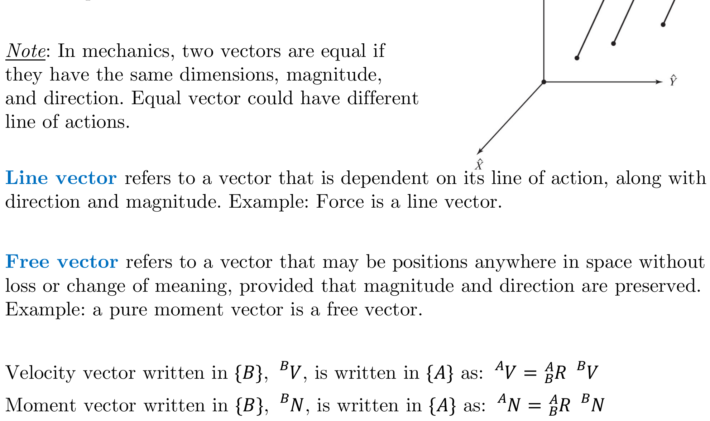
Velocity vector written in $\{B\}$, ${}^{B}V$, is written in $\{A\}$ as:
$${}^{A}V = {}^{A}_{B}R \; {}^{B}V$$Moment vector written in $\{B\}$, ${}^{B}N$, is written in $\{A\}$ as:
$${}^{A}N = {}^{A}_{B}R \; {}^{B}N$$Note: Free vectors are transformed using only the rotation matrix (no translation component), because they are independent of position.
This is a subtle but important point that often confuses students. Consider the homogeneous transform:
$${}^{A}_{B}T = \begin{bmatrix} R & d \\ 0 & 1 \end{bmatrix}$$For a position vector (a point in space), we use the full transform:
$${}^{A}P = R \cdot {}^{B}P + d$$But for a free vector like velocity $V$ or moment $N$, we use only the rotation:
$${}^{A}V = R \cdot {}^{B}V$$Why? A free vector represents a direction and magnitude -- it has no attachment to a particular point in space. Moving the origin does not change a free vector, so the translation $d$ is irrelevant. Only the orientation difference matters, which is captured by $R$.
In homogeneous coordinates, this distinction is encoded by using $0$ instead of $1$ as the fourth element:
$$\begin{bmatrix} R & d \\ 0 & 1 \end{bmatrix} \begin{bmatrix} V \\ 0 \end{bmatrix} = \begin{bmatrix} RV \\ 0 \end{bmatrix}$$The zero in the fourth position "kills" the translation term. This is the geometric difference between a point (represented with a 1) and a vector (represented with a 0) in homogeneous coordinates.
This becomes critical in Chapter 5 when dealing with angular velocities and static forces in the Jacobian framework.
PDF p.29 End of Chapter 2 -- "Let The Learning Continue"
Which orientation representation is singularity-free and uses the fewest parameters?
In the subscript-cancellation rule, ${}^{A}_{B}R \; {}^{B}_{C}R$ equals:
Summary of Key Equations
Position Vector PDF p.3
$${}^{A}P = \begin{bmatrix} p_x \\ p_y \\ p_z \end{bmatrix}$$Rotation Matrix (Direction Cosines) PDF p.6
$${}^{A}_{B}R = \begin{bmatrix} \cos(\alpha_x) & \cos(\alpha_y) & \cos(\alpha_z) \\ \cos(\beta_x) & \cos(\beta_y) & \cos(\beta_z) \\ \cos(\gamma_x) & \cos(\gamma_y) & \cos(\gamma_z) \end{bmatrix}$$Rotation Matrix (Dot Products) PDF p.6
$${}^{A}_{B}R = \begin{bmatrix} \hat{X}_A \cdot \hat{X}_B & \hat{X}_A \cdot \hat{Y}_B & \hat{X}_A \cdot \hat{Z}_B \\ \hat{Y}_A \cdot \hat{X}_B & \hat{Y}_A \cdot \hat{Y}_B & \hat{Y}_A \cdot \hat{Z}_B \\ \hat{Z}_A \cdot \hat{X}_B & \hat{Z}_A \cdot \hat{Y}_B & \hat{Z}_A \cdot \hat{Z}_B \end{bmatrix}$$Rotation Matrix Properties PDF p.7
$${}^{B}_{A}R = {}^{A}_{B}R^T = {}^{A}_{B}R^{-1}$$Frame Description PDF p.8
$$\{B\} = \{{}^{A}_{B}R, \; {}^{A}P_{B_{ORG}}\}$$Translational Mapping PDF p.10
$${}^{A}P = {}^{B}P + {}^{A}P_{B_{ORG}}$$Rotational Mapping PDF p.11
$${}^{A}P = {}^{A}_{B}R \; {}^{B}P$$General Mapping PDF p.12
$${}^{A}P = {}^{A}_{B}R \; {}^{B}P + {}^{A}P_{B_{ORG}}$$Homogeneous Transform PDF p.13
$${}^{A}_{B}T = \begin{bmatrix} {}^{A}_{B}R & {}^{A}P_{B_{ORG}} \\ 0 \;\; 0 \;\; 0 & 1 \end{bmatrix}$$Compound Transformations PDF p.15
$${}^{0}_{n}T = {}^{0}_{1}T \; {}^{1}_{2}T \; {}^{2}_{3}T \cdots {}^{n-1}_{n}T$$Inverse of Homogeneous Transform PDF p.15
$${}^{A}_{B}T^{-1} = \begin{bmatrix} {}^{A}_{B}R^T & -{}^{A}_{B}R^T \; {}^{A}P_{B_{ORG}} \\ 0 \;\; 0 \;\; 0 & 1 \end{bmatrix} = {}^{B}_{A}T$$Transform Equations PDF p.16
$${}^{U}_{D}T = {}^{U}_{A}T \; {}^{A}_{D}T = {}^{U}_{B}T \; {}^{B}_{C}T \; {}^{C}_{D}T$$Cayley's Formula PDF p.17
$$R = (I_3 - S)^{-1}(I_3 + S)$$Fixed Angles X-Y-Z (Roll-Pitch-Yaw) PDF p.19
$${}^{A}_{B}R_{XYZ}(\gamma, \beta, \alpha) = R_Z(\alpha) \; R_Y(\beta) \; R_X(\gamma) = \begin{bmatrix} c\alpha c\beta & c\alpha s\beta s\gamma - s\alpha c\gamma & c\alpha s\beta c\gamma + s\alpha s\gamma \\ s\alpha c\beta & s\alpha s\beta s\gamma + c\alpha c\gamma & s\alpha s\beta c\gamma - c\alpha s\gamma \\ -s\beta & c\beta s\gamma & c\beta c\gamma \end{bmatrix}$$Euler Angles Z-Y-X (identical matrix to X-Y-Z fixed) PDF p.22
$${}^{A}_{B}R_{Z'Y'X''}(\alpha, \beta, \gamma) = R_Z(\alpha) \; R_{Y'}(\beta) \; R_{X''}(\gamma)$$Euler Angles Z-Y-Z PDF p.23
$${}^{A}_{B}R_{Z'Y'Z''}(\alpha, \beta, \gamma) = \begin{bmatrix} c\alpha c\beta c\gamma - s\alpha s\gamma & -c\alpha c\beta s\gamma - s\alpha c\gamma & c\alpha s\beta \\ s\alpha c\beta c\gamma + c\alpha s\gamma & -s\alpha c\beta s\gamma + c\alpha c\gamma & s\alpha s\beta \\ -s\beta c\gamma & s\beta s\gamma & c\beta \end{bmatrix}$$Angle-Axis Representation PDF p.26
$$R_K(\theta) = \begin{bmatrix} k_x k_x v\theta + c\theta & k_x k_y v\theta - k_z s\theta & k_x k_z v\theta + k_y s\theta \\ k_x k_y v\theta + k_z s\theta & k_y k_y v\theta + c\theta & k_y k_z v\theta - k_x s\theta \\ k_x k_z v\theta - k_y s\theta & k_y k_z v\theta + k_x s\theta & k_z k_z v\theta + c\theta \end{bmatrix}$$Euler Parameters (Quaternion) to Rotation Matrix PDF p.27
$$R_\epsilon = \begin{bmatrix} 1 - 2\epsilon_2^2 - 2\epsilon_3^2 & 2(\epsilon_1\epsilon_2 - \epsilon_3\epsilon_4) & 2(\epsilon_1\epsilon_3 + \epsilon_2\epsilon_4) \\ 2(\epsilon_1\epsilon_2 + \epsilon_3\epsilon_4) & 1 - 2\epsilon_1^2 - 2\epsilon_3^2 & 2(\epsilon_2\epsilon_3 - \epsilon_1\epsilon_4) \\ 2(\epsilon_1\epsilon_3 - \epsilon_2\epsilon_4) & 2(\epsilon_2\epsilon_3 + \epsilon_1\epsilon_4) & 1 - 2\epsilon_1^2 - 2\epsilon_2^2 \end{bmatrix}$$Free Vector Transformation PDF p.28
$${}^{A}V = {}^{A}_{B}R \; {}^{B}V \qquad {}^{A}N = {}^{A}_{B}R \; {}^{B}N$$| Representation | Parameters | Singularity? | Composition | Interpolation | Intuition |
|---|---|---|---|---|---|
| Rotation Matrix | 9 (6 constraints) | None | Matrix multiply | Not natural | Moderate |
| Euler Angles | 3 | Gimbal lock | Complex trig | Poor | High |
| Fixed Angles | 3 | Gimbal lock | Complex trig | Poor | High |
| Angle-Axis ($\hat{K}, \theta$) | 4 (1 constraint) | $\theta = 0$ (axis undefined) | Not simple | Moderate | Good |
| Quaternion | 4 (1 constraint) | None | Quaternion multiply | SLERP (excellent) | Low |
Key takeaway: There is no single "best" representation. Each has trade-offs between compactness, singularity-freedom, computational efficiency, and human interpretability. In robotics practice, rotation matrices are used for frame transforms (DH parameters), quaternions for orientation estimation and interpolation, and Euler angles for human-facing interfaces.
Foundations of Robot Motion (Chapters 2 & 3) -- Modern Robotics
A comprehensive overview lecture connecting the coordinate frame descriptions and spatial transformations from Chapter 2 to the manipulator kinematics of Chapter 3.
Rotation Matrices and Homogeneous Transformations -- Mecharithm
Offers a lesson-by-lesson breakdown of rotation matrices with robotics examples. Covers the same implicit/explicit representation distinction used in the slides.
- Textbook: John J. Craig, Introduction to Robotics: Mechanics and Control, 3rd Edition (2005), Chapter 2. PDF mirror
- Textbook: Kevin M. Lynch and Frank C. Park, Modern Robotics: Mechanics, Planning, and Control (2017), Chapter 3. Book website
- Lecture notes: Duke University -- Coordinate Transformations -- excellent supplementary treatment with interactive visualizations
- Lecture notes: Iowa State -- Homogeneous Transformations -- rigorous mathematical treatment
- Interactive tool: 3D Transform Viewer -- interactive 3D visualization of rotation matrices, Euler angles, and quaternions
- Interactive tool: Ben Eater -- Visualizing Quaternions -- interactive explorable video series on quaternion rotations
- Wikipedia: Rotation matrix, Gimbal lock, Quaternions and spatial rotation
Or in homogeneous form: ${}^A P = {}^A_B T \; {}^B P$
Note: use $R^T$ not $R^{-1}$ (they are equal for rotation matrices, but $R^T$ is cheaper to compute).
$\hat{K} = \frac{1}{2\sin\theta}\begin{bmatrix} r_{32} - r_{23} \\ r_{13} - r_{31} \\ r_{21} - r_{12} \end{bmatrix}$
Free vector: 4th element = 0 (translation ignored)
$T \begin{bmatrix} V \\ 0 \end{bmatrix} = \begin{bmatrix} RV \\ 0 \end{bmatrix}$